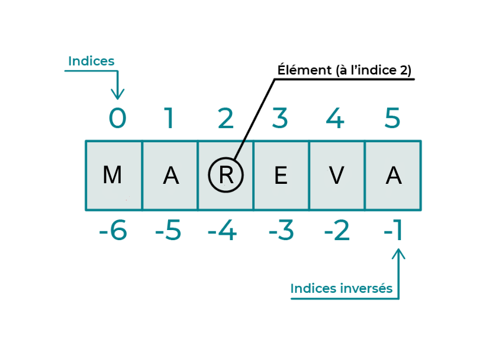

ma_variable = 15
print(ma_variable)15Qu’est ce qu’une variable ? Une variable est un conteneur dans lequel tu peux stocker différents types de données : des nombres, des chaines de caractères, ou d’autres objets.
Par exemple a = 15 est une variable nomée a avec pour valeur 15.
Nous pouvons contaster :
L’affectation (=)
Python est un langage à typage dynamique, c’est-à-dire que le type des variables est déterminé lors de l’exécution du programme.
Sensible à la casse, la variable “A” et “a” sont deux variables différentes.
L’instruction Print permet d’imprimer plusieurs variables en même temps avec (,).
Plusieurs valeurs à plusieurs variables ou plusieurs variables à plusieurs valeurs sur une seule ligne.
La dénomination des variables comportent :
Evite de:
En Python, les données courantes incluent : * les entiers (int) : des nombres sans décimale. + Exemple : 6, -4.
complex) : des nombres comprenant une partie réelle et une partie imaginaire.
2 + 7j.float) : des nombres avec au moins une décimale.
3.87, -0.005.str) : une suite de caractères, délimitée par des guillemets simples ou doubles.
"Hello Mareva !"bool) : souvent le résultat d’expressions, de comparaison ou de conditions logiques.
True (Vrai) et False (Faux).La fonction type()
Exemple : Vérifions le type de chaque variable en impliquant une phrase réponse
La variable prenoms est de type : <class 'str'>La variable taille est de type : <class 'float'>La variable etudiant est de type : <class 'bool'>Souvent appelée “casting” en programmation, la conversion de type est une manière de convertir une valeur d’un type donné en un autre type.
En Python, il existe différentes fonctions intégrées pour réaliser ces conversions entre les types de base comme vue précédemment : les entiers (int), les chaînes de caractères(str), les booléens (bool), ainsi que les nombres à virgule flottante (float).
Voici des exemples :
int)# Depuis une chaîne de caractères : convertion de la chaîne "987" en entier 987
chaine = "987"
departement = int(chaine)
# Depuis un booléen : convertion de True en entier 0
vrai = False
entier = int(False)
# Depuis un float : convertion d'un nombre décimal 10,02 en 10 entier (troncature, pas d'arrondi)
flottante = 10.02
entier = int(flottante) str)bool)# Depuis une chaîne de caractères :
## Convertion d'une chaîne vide en False
chaine1 = ""
booleen = bool(chaine1)
## Convertion de "Prog" en True
chaine2 = "Prog"
booleen1 = bool(chaine2)
# Depuis un nombre :
## Convertit 0 en False
nombre1 = 0
booleen1 = bool(nombre1)
## Convertit 987 en True
nombre2 = 987
booleen2 = bool(nombre2) float)## Depuis une chaîne de caractères** :
chaine = "987.87"
flottant = float(chaine) # Convertit la chaîne "987.87" en float 987.87
## Depuis un entier** :
entier = 1000
flottant = float(entier) # Convertit l'entier 1000 en float 1000.0
## Depuis un booléen** :
vrai = True
flottant = float(vrai) # Convertit True en 1.0Démonstration des Additions (+), soustractions (-), **multiplications (*), et divisions (/)**.
somme = 14 + 4
difference = 14 - 4
produit = 14 * 4
quotient = 14 / 4
print(somme , difference , produit , quotient)18 10 56 3.5Démonstratin de : Modulo (%), qui retourne le reste de la division, et **Puissance (* *)** élève un nombre à une certaine puissance.
Les opérateurs d’affectation composés sont des raccourcis qui jumèlent une opération arithmétique ou binaire avec une affectation.
En résumé, ils vous permettent de réaliser une opération sur une variable et de lui réassigner le résultat en une seule étape.
Les commentaires sont utilisés pour expliquer le code.
Ils sont très utiles pour vous ainsi que pour toute personne qui lit votre code. Les commentaires démarrent par un # et vont jusqu’à la fin de la ligne
Les commentaires sont ignorés lors de l’exécution du code.
Pour l’affichage, la fonction print() est utilisée. Elle permet de montrer le texte, les nombres et d’autres objets sur la console.
print("Bonjour, la vie !") # Affiche un message simple
nombre = 22
print(nombre) # Affiche la valeur de la variable 'nombre'
# Vous pouvez aussi combiner du texte et des variables :
print("Le valeur est", nombre) Bonjour, la vie !
22
Le valeur est 22Utilisation de f-string seul
beau_prenom = 'Malow'
age = 17
taille = 176
# Formatage de chaînes avec f-string pour une meilleure lisibilité :
print(f"Malow a {age} ans")
print(f"{beau_prenom}, est partie")Malow a 17 ans
Malow, est partief-string avec plusieurs variables
Utilisation de format()
L’instruction précédente utilise la méthode .format() pour insérer les variables dans la chaîne de caractères.
Les placeholders sont des {} qui seront remplacés par les arguments de .format() dans l’ordre.
ma_chaine et age seront insérés respectivement dans le premier et le second {}.
Calcul et arrondi
Le premier print(prop) affiche la valeur de prop avec tous ses chiffres après la virgule.
Le second print() utilise une f-string avec un formatage spécifique {prop:.2f}.
Cela signifie que la valeur de prop sera formatée pour afficher seulement deux chiffres après la virgule.
Les opérateurs Python sont employés pour exécuter des actions sur les variables et les valeurs.
| Opérateur comparaison | Description | |
|---|---|---|
| Égalité | == | |
| Différent de | != | |
| Supérieur | > | |
| Inférieur | < | |
| Supérieur ou égale | >= | |
| Inférieur ou égale | <= |
| Opérateur logique | Description | Résultat |
|---|---|---|
| And | and | True si les deux propositions sont vraies |
| Or | or | True si au moins une des propositions est Vraie |
| Not | not | Inverse de l’instruction |
| Opérateur logique | Description | Résultat |
|---|---|---|
| In | in | True si la valeur spécifiée est présente dans l’objet |
| Not In | not in | True si la valeur spécifiée n’est pas présente dans l’objet |
# Exemples d'opérateurs de comparaison
print("Opérateurs :")
print(6 == 6) # Égalité, renvoie True
print(6 != 3) # Différent de, renvoie True
print(6 > 4) # Supérieur à, renvoie True
print(6 < 9) # Inférieur à, renvoie True
print(6 >= 4) # Supérieur ou égal à, renvoie True
print(6 <= 9) # Inférieur ou égal à, renvoie TrueOpérateurs :
True
True
True
True
True
TrueChainer les comparateurs Il est également faisable de chainer les comparateurs:
# condition
x = 50
# Condition 1 : vérifie si x est inférieur à 40
if x < 40:
print("x est inférieur à 40")
# Condition 2 : vérifie si x est supérieur ou égal à 100
elif x >= 10:
print("x est supérieur ou égal à 1000")
# Condition 3 : si toutes les conditions précédentes sont fausses
else:
print("x est supérieur à 40 mais inférieur à 1000")x est supérieur ou égal à 1000# Initialisation des variables
x = 20
y = 40
# Première condition : vérifie si x est inférieur à 5 ET y est supérieur à 15
if (x < 5) and (y > 15):
print("x est inférieur à 5 et y est supérieur à 15")
# Deuxième condition : vérifie si x est supérieur ou égal à 20 OU y est supérieur ou égal à 40
elif (x >= 20) or (y >= 40):
print("x est supérieur ou égal à 20 ou y est supérieur ou égal à 40")
# Dernière condition : si
# toutes les conditions précédentes sont fausses
else:
print("x est supérieur à 5")x est supérieur ou égal à 20 ou y est supérieur ou égal à 40La boucle for est employée pour explorer différentes structures de données telles que des listes, des tuples, des tableaux, des chaînes de caractères ou encore des dictionnaires.
Cette boucle initie son itération en examinant le premier élément de la séquence. Elle exécute ensuite des actions spécifiées dans son bloc, puis passe à l’élément suivant jusqu’à ce que la séquence soit entièrement parcourue.
mûre
pitaya
coco
myrtille# print("Boucle for sur une liste:")
# ma_liste = [6, 7, 8, 9, 10]
# for element in ma_liste:
# print(element)
nombres = [6, 7, 8, 9, 10]
for nombre in nombres:
if nombre % 2 == 0:
print(f"{nombre} est pair")
else:
print(f"{nombre} est impair")6 est pair
7 est impair
8 est pair
9 est impair
10 est pairLa boucle while fonctionne en itérant sur un bloc de code tant qu’une condition spécifiée reste vraie. Contrairement aux boucles “for”, les boucles “while” continuent leur itération tant que la condition reste vérifiée.
Pour sortir prématurément d’une boucle “while”, même si la condition est toujours vraie, on utilise l’instruction “break”.
On peut utiliser l’instruction “else” avec une boucle “while” pour exécuter un bloc de code lorsque la condition de la boucle n’est plus vraiee.
L’instruction “continue” permet d’ignorer le reste du code dans l’itération actuelle de la boucle et de passer à l’itération suivante.
!! Il est important de faire preuve de prudence lors de l’utilisation de “continue” afin d’éviter de créer des boucles infinies.
# Boucle while avec break
print("\nBoucle while avec break:")
i = 2
while i <= 6:
print(i)
if i == 4:
print("Break à 4")
break
i += 2
Boucle while avec break:
2
4
Break à 4Chaque type de données séquentielles possède ses propres caractéristiques et utilisations spécifiques, offrant ainsi une grande flexibilité dans le traitement des données. Les listes et les dictionnaires sont particulièrement prisés pour leur souplesse et leurs capacités de stockage dynamique.
Les chaînes de caractères (str) servent à stocker et à manipuler du texte. Elles sont définies en encadrant le texte entre guillemets simples ('...'), doubles ("...") ou triples ('''...''' ou """...""" pour les chaînes sur plusieurs lignes).

Séquences de caractères, indexées à partir de 0.
Peuvent être délimitées par des guillemets simples, doubles ou triples.
Exemple : "Mareva", 'Prog'.
Caractères d’Échappement : pour inclure des caractères spéciaux comme des guillemets ou des retours à la ligne dans une chaîne, utilisez des caractères d’échappement (\).
Les chaînes de caractères offrent une polyvalence exceptionnelle et proposent une multitude de méthodes pour le traitement de texte. Qu’il s’agisse de manipulations élémentaires ou d’opérations plus complexes, les chaînes sont un atout indispensable.
# Définition chaines de caractères
chaine_simple = 'Hello'
longueur = len(chaine_simple)
print(f"{chaine_simple}, 'la longueur est {longueur}")Hello, 'la longueur est 5Fonctionnalités des méthodes pour les chaînes de caractères : Les méthodes sont des fonctions associées à des objets spécifiques. Elles permettent d’effectuer des actions sur ces objets ou de manipuler leurs données internes. Voici quelques points essentiels à propos des méthodes :
Liaison avec des Objets : Contrairement aux fonctions indépendantes, les méthodes sont liées à des objets. Par exemple, les méthodes des chaînes de caractères (str) sont conçues pour opérer sur des chaînes de caractères spécifiques.
Syntaxe : Une méthode est invoquée en utilisant la notation pointée. Par exemple, objet.methode().
Méthodes pour les chaînes de caractères : Les chaînes de caractères possèdent des méthodes telles que upper(), lower() et replace() pour convertir en majuscules, en minuscules ou remplacer une partie de la chaîne.
Appel : Pour appeler une méthode, utilisez généralement la syntaxe objet.methode(arguments).
# Méthodes str.isupper() et str.islower()
majuscules = "MAREVA"
minuscules = "Mareva"
is_upper = majuscules.isupper()
is_lower = minuscules.islower()
print(is_upper)
print(is_lower) True
FalseLA PROGRA C'EST GÉNIALla progra c'est genial# Méthode str.capitalize()
texte_capitalize = "la progra c'est génial".capitalize()
print(texte_capitalize) La progra c'est génialLa Progra C'Est Génial# Méthode str.find(substring)
texte = "Progra c'est génial"
position = texte.find("c'est")
print(position) 7# Méthode str.replace(old, new)
texte_replace = "Les pommes sont rouges.".replace("pommes", "feux")
print(texte_replace) Les feux sont rouges.['coco', 'mangue', 'litchi']# Méthode str.join(iterable)
elements = ["coraux", "nature", "ocean"]
texte_join = ", ".join(elements)
print(texte_join) coraux, nature, oceanLes listes sont des structures de données qui permettent de stocker une série d’éléments. Elles sont flexibles, peuvent contenir des éléments de différents types et sont mutables (modifiables).
list) :
[]. Par exemple : [3, "m", 4.20].0.# Définition de liste
ma_liste = [3, 4, 5, "Progra", 4.20, False]
print(ma_liste)
premier_element = ma_liste[0] # Accède au premier élément (1)
dernier_element = ma_liste[-1] # Accède au dernier élément (False)
print(premier_element,"\n", dernier_element)[3, 4, 5, 'Progra', 4.2, False]
3
False[3, 'deux', 5, 'Progra', 4.2, False]# Concaténation et Répétition
combinee = ma_liste + ["autre", "liste"]
print(combinee)
repetee = [1, 2, 3] * 3
print(repetee)[3, 'deux', 5, 'Progra', 4.2, False, 'autre', 'liste']
[1, 2, 3, 1, 2, 3, 1, 2, 3]La fonction intégrée range() permet de créer une liste d’entiers
| Méthode | Description | Exemple |
|---|---|---|
append() |
Ajoute un élément à la fin de la liste | list.append(8) |
extend() |
Étend la liste en ajoutant tous les éléments d’une autre liste | list.extend([9, 12]) |
insert() |
Insère un élément à une position donnée | liste.insert(4, d) |
remove() |
Supprime la première occurrence d’un élément | liste.remove('d') |
pop() |
Supprime et renvoie un élément à une position donnée (par défaut ,le dernier) | liste.pop() |
clear() |
Supprime tous les éléments de la liste | liste.clear() |
index() |
Retourne l’indice du premier élément correspondant | liste.index('d') |
count() |
Compte le nombre d’occurences d’une élément spécifique | liste.count(8) |
sort() |
Trie les élément de la liste (dans un ordre spécifique) | liste.sort() |
reverse() |
Inverse l’ordre des éléments de la liste | liste.reverse() |
Parcours de Liste Le parcours de liste consiste à accéder séquentiellement à chaque élément d’une liste. CEtte opération peut être faite de différentes manières, mais les approches les plus courantes sont les boucles for et while.
for : la méthode la plus répandu pour parcourir une liste. Elle permet de traiter chaque élément individuellement.List Comprehension : une méthode concise pour générer des listes. Elle facilite la transformation d’une liste en une autre liste, en filtrant les éléments selon une expression donnée.La syntaxe de base d’une compréhension de liste est :
[nouvelle_expression for item in iterable if condition]
nouvelle_expression est l’expression qui définit comment mapper les éléments de l’iterable (par exemple, une liste).item est la variable qui prend la valeur de chaque élément de l’iterable pendant chaque itération.condition est une condition optionnelle pour filtrer les éléments de l’iterable.# récupérer tous les fruits avec un "a"
fruits = ["poire", "fraise", "kiwi", "pitaya", "mangue"]
newlist = []
for f in fruits:
if "a" in f:
newlist.append(f)
print(newlist)['fraise', 'pitaya', 'mangue']Avec des boucles imbriquées
Voici une boucle for qui aplatit une matrice (une liste de listes) :
# Définition d'une matrice
matrix = [
[1, 2, 3],
[4, 5, 6],
[7, 8, 9]]
flattened = []
for row in matrix:
for n in row:
flattened.append(n)
print(flattened)[1, 2, 3, 4, 5, 6, 7, 8, 9]Et voici une compréhension de liste qui fait la même chose :
Les tuples sont :
Similaires aux listes, mais immuables (non modifiables après création).
Les éléments sont séparés par des virgules et entourés de parenthèses.
Exemple : (1, “a”, 3.14).
| Avantage | Description | |
|---|---|---|
| Sécurité des données | Parfait pour protéger les données contre les modifications | |
| Performance | Plus rapide à parcourir que les listes | |
| utilisation en tant queClé de Dictionnaire | Peuvent être utilisés comme clés dans les dictionnaires, contrairement aux listes | |
| Retour de plusieurs valeurs de fonction | Utilisé pour retourner plusieurs valeurs depuis une fonction | |
| Stockage de données constantes | Idéaux pour stocker des données qui ne doivent pas être modifiées |
Collections non ordonnées de valeurs uniques.
Utiles pour les opérations d’ensemble et la recherche de valeurs uniques.
Mutables, mais chaque élément doit être unique.
Non-Ordonnés : Les ensembles ne maintiennent pas l’ordre des éléments. Vous ne pouvez donc pas accéder aux éléments par un index. Exemple : {1, 2, 3}.
Opérations d’Ensemble
| Opération | Syntaxe | Description |
|---|---|---|
| Union | a | b |
Retourne un nouvel ensemble contenant tous les éléments uniques des ensembles a et b |
| Intersection | a & b |
Retourne un nouvel ensemble contenant uniquement les éléments communs aux ensembles a et b |
| Différence | a - b |
Retourne un nouvel ensemble contenant les éléments de a qui ne sont pas dans b |
| Différence symétrique | a ^ b |
Retourne un nouvel ensemble contenant tous les éléments qui sont dans a ou b, mais pas dans les deux |
| Ajout | a.add(x) |
Ajoute l’élément x à l’ensemble a |
| Suppression | a.remove(x) |
Supprime l’élément x de l’ensemble a ; lève une erreur si x n’est pas présent |
| Suppression (sans erreur) | a.discard(x) |
Supprime l’élément x de l’ensemble a si x est présent ; ne fait rien sinon |
# Définition des ensembles
ensemble_a = {1, 2, 3, 4}
ensemble_b = {3, 4, 5, 6}
print(ensemble_a, ensemble_b)
# Seule une valeur est représentée
ensemble_c = {1, 1, 1}
print(ensemble_c){1, 2, 3, 4} {3, 4, 5, 6}
{1}# Opérations d'ensemble
union = ensemble_a | ensemble_b
intersection = ensemble_a & ensemble_b
difference_a = ensemble_a - ensemble_b
difference_b = ensemble_b - ensemble_a
difference_symetrique = ensemble_a ^ ensemble_b
# Affichage des résultats
print("Union :", union)
print("Intersection :", intersection)
print("Différence a :", difference_a)
print("Différence b :", difference_b)
print("Différence Symétrique :", difference_symetrique)
print(ensemble_a)Union : {1, 2, 3, 4, 5, 6}
Intersection : {3, 4}
Différence a : {1, 2}
Différence b : {5, 6}
Différence Symétrique : {1, 2, 5, 6}
{1, 2, 3, 4}Après ajout : {1, 2, 3, 4, 7}Les dictionnaires sont :
# Définition d'un dictionnaire
personne = {"nom": "Perez", "age": 21}
autre_dict = dict(nom="Danloue", age=22)
print(personne){'nom': 'Perez', 'age': 21}{'nom': 'Perez', 'age': 21, 'poste': 'Développeuse'}# Mise à Jour de plusieurs clés
personne.update([('nom', "Lavis"), ('poste', "Data Analyst")])
print(personne){'nom': 'Lavis', 'age': 21, 'poste': 'Data Analyst'}# Utilisation de keys()
cles = personne.keys()
print("Clés:", cles)
# Utilisation de values()
valeurs = personne.values()
print("Valeurs:", valeurs)
# Utilisation de items()
paires = personne.items()
print("Paires clé-valeur:", paires)Clés: dict_keys(['nom', 'age', 'poste'])
Valeurs: dict_values(['Lavis', 21, 'Data Analyst'])
Paires clé-valeur: dict_items([('nom', 'Lavis'), ('age', 21), ('poste', 'Data Analyst')])# Utilisation de get()
nom_personne = personne.get("nom")
age_personne = personne.get("age")
print(nom_personne, age_personne)Lavis 21# Parcours des clés
print("\nParcours des clés:")
for cle in personne.keys():
print(cle)
# Parcours des valeurs
print("\nParcours des valeurs:")
for valeur in personne.values():
print(valeur)
# Parcours des paires clé-valeur
print("\nParcours des paires clé-valeur:")
for cle, valeur in personne.items():
print(cle, ":", valeur)
Parcours des clés:
nom
age
poste
Parcours des valeurs:
Lavis
21
Data Analyst
Parcours des paires clé-valeur:
nom : Lavis
age : 21
poste : Data Analystprint("\nParcours des paires clé-valeur avec enumerate:")
for index, (cle, valeur) in enumerate(personne.items()):
print(f"Index {index}: Clé = {cle}, Valeur = {valeur}")
Parcours des paires clé-valeur avec enumerate:
Index 0: Clé = nom, Valeur = Lavis
Index 1: Clé = age, Valeur = 21
Index 2: Clé = poste, Valeur = Data AnalystQu’est-ce qu’une Fonction ? Une fonction représente une séquence d’instructions accessible via un nom spécifique. En programmation, elle agit comme une entité autonome, prenant éventuellement des paramètres en entrée, exécutant des opérations définies, et parfois fournissant une sortie.
Explication de ce qu’est une fonction en programmation En Programmation, une fonction se définti à l’aide du mot-clé def, suivi du nom de la fonction, des parenthèses () contenant des paramètres (si nécessaires), et un bloc d’instructions indenté.
L’importance des fonctions pour réduire la répétition de code Les fonctions jouent un rôle crucial dans la réduction de la redondance du code. Elles permettent de rassembler des segments de code similaires, simplifiant ainsi sa gestion, sa lecture et son entretien.
Pourquoi Utiliser des Fonctions ? Les fonctions apportent une valeur ajoutée pour plusieurs raisons :
Simplification du code En encapsulant des séquences complexes d’opérations dans des fonctions, on rend le code principal plus concis et plus intelligible.
Réutilisabilité Une fois définie, une fonction peut être invoquée à volonté, évitant ainsi la duplication de code, ce qui économise du temps et diminue les risques d’erreurs.
Meilleure organisation du code Les fonctions contribuent à structurer le code en unités logiques, chacune ayant un objectif spécifique. Cette approche facilite la compréhension globale du programme, ainsi que le débogage et le test des parties distinctes.
Voici une présentation de la section “Syntaxe de Base des Fonctions” avec des explications et des exemples, rédigée en Markdown :
Dans cet exemple, ma_fonction est le nom de notre fonction. Le bloc d’instructions qui suit définit ce que la fonction fait lorsqu’elle est appelée. Ici, la fonction affiche simplement un message = “Ceci est une fonction”
Elle n’est exécutée que lorsque la fonction est appelée.
Cet appel exécute les instructions définies dans ma_fonction.
Ici, nom est un paramètre de la fonction saluer. Lorsque la fonction est appelée, elle s’attend à recevoir une valeur pour ce paramètre.
Dans cet appel, "Mareva" est un argument qui est passé à la fonction saluer. La fonction utilisera la valeur de cet argument lors de son exécution.
Les paramètres d’une fonction sont des variables définies à l’intérieur de sa structure. Ils servent de réceptacles pour les valeurs (arguments) que la fonction traitera lorsqu’elle est invoquée.
Différence entre Paramètres et Arguments * Les paramètres sont les noms des variables définies dans la structure de la fonction. Ils servent à faire référence aux valeurs qui seront passées lors de l’appel de la fonction.
Valeurs par Défaut des Paramètres Les fonctions peuvent inclure des paramètres avec des valeurs par défaut. Ces valeurs sont utilisées si aucun argument correspondant n’est fourni lors de l’appel de la fonction.
Dans cet exemple, param2 a une valeur par défaut de 15. Si ma_fonction est appelée sans un second argument, param2 utilisera cette valeur par défaut.
Les valeurs par défaut rendent les fonctions plus flexibles et permettent d’éviter des erreurs si certains arguments ne sont pas essentiels. Voici un exemple d’appel de la fonction avec et sans le second argument :
Il y a deux catégories principales de fonctions : celles qui produisent une sortie et celles qui n’en produisent pas.
return.Cette fonction retourne la chaîne de caractères "valeur return". Lorsqu’elle est appelée, on peut récupérer cette valeur :
valeur returnCette fonction affiche un message mais ne retourne rien. L’appel de cette fonction se concentre sur l’effet produit (ici, l’affichage) plutôt que sur une valeur retournée.
2.5
NoneLa portée d’une variable détermine où dans le code elle est accessible. En Python, les variables peuvent avoir une portée locale ou globale.
Les variables globales sont utiles pour partager des données entre différentes parties d’un programme.
Cependant, il faut les utiliser avec prudence pour éviter des problèmes de conception.
Vous pouvez créer des fonctions qui acceptent un nombre variable d’arguments grâce à *args pour les listes et **kwargs pour les dictionnaires de mots-clés.
multiplication(4, 3, 4, 90)
def param_args(*parametres):
print(parametres[0]*parametres[1])
print(f"Message : {parametres[2]}")
param_args(2, 3, "Hello!")4320
6
Message : Hello!def nombre_args(*args):
return len(args)
args_tuple = (5, 6, 8, 9)
nombre_args(*args_tuple) # mettre etoile pour le tuple4# pratique pour définir des clé d'arguments
def nombre_kwarg(**nombre):
print('Mon age est : ' + nombre['age'] + ' ans' + ' et ma taille est : ' + nombre["taille"] + ' metres')
nombre_kwarg(age = '21', taille = '1.63', profession = "Star")Mon age est : 21 ans et ma taille est : 1.63 metres# `args` est un tuple contenant tous les arguments positionnels
# `kwargs` est un dictionnaire contenant tous les arguments nommés.
def ma_fonction(*args, **kwargs):
print("args:", args)
print("kwargs:", kwargs)
ma_fonction(1, 2, 3, nom="Mareva", age=21)args: (1, 2, 3)
kwargs: {'nom': 'Mareva', 'age': 21}# fonction qui renvoie un nombre à la puissance
def nombre_puissance(nombre, puissance):
# documenter le code
"""
cette fonction calcule un nombre à la puissance et retourne le résultat.
Parameters:
nombre (int): le premier nombre
puissance (int): le deuxième nombre
Returns (int): le resultat nombre a la puissance
"""
return nombre ** puissancenum = int(input("Saississez un nombre entier : "))
power = int(input("Saississez une puissance : "))
La récursivité, un principe clé en programmation, est solidement pris en charge par Python. Elle implique qu’une fonction s’appelle elle-même dans sa propre définition. Bien que cela puisse sembler déconcertant au départ, c’est une technique extrêmement efficace pour résoudre certains types de problèmes, notamment ceux qui peuvent être décomposés en sous-problèmes plus petits et similaires.
def countdown(n):
if n <= 0:
print("Lancement terminé!")
else:
print(n)
countdown(n - 1)
countdown(5)5
4
3
2
1
Lancement terminé!Dans cet exemple, la fonction countdown prend un nombre entier n en paramètre. Si n est inférieur ou égal à zéro, la fonction affiche “Lancement terminé!”. Sinon, elle affiche la valeur actuelle de n puis appelle elle-même avec n - 1.
La récursivité doit être utilisée avec prudence, car une mauvaise utilisation peut entraîner des erreurs de débordement de pile (stack overflow).
Cela se produit lorsque trop de fonctions récursives sont empilées sur la pile d’appels du programme.
Les générateurs sont des structures puissantes en Python permettant de créer des itérables de manière efficace et sans consommer beaucoup de mémoire.
Contrairement aux listes, les générateurs produisent des valeurs au fur et à mesure de leur utilisation, ce qui les rend idéaux pour traiter de grandes quantités de données de manière efficace.
yield pour renvoyer des valeurs.yield, elle devient un générateur.yield.yield précédente.def mon_generateur():
yield 1
yield 2
yield 3
# Utilisation du générateur
gen = mon_generateur()
# Utilisation d'une boucle for pour itérer sur tous les éléments du générateur
for element in gen:
print(element)1
2
3Dans cet exemple, chaque yield renvoie une valeur successive à chaque appel de next().
Lorsque toutes les valeurs ont été renvoyées, le générateur lève une exception StopIteration.
def pairs_infinis():
n = 0
while True:
yield n
n += 2
# Utilisation du générateur
gen = pairs_infinis()
for _ in range(10):
print(next(gen)) # Affiche : 0, 2, 4, 6, 80
2
4
6
8
10
12
14
16
18def fibonacci(n):
sequence = [0, 1]
while len(sequence) < n:
sequence.append(sequence[-1] + sequence[-2])
return sequence
# Utilisation de la fonction
print(fibonacci(10)) # Affiche les 10 premiers nombres de la séquence Fibonacci[0, 1, 1, 2, 3, 5, 8, 13, 21, 34]def fibonacci():
a, b = 0, 1
while True:
yield a
a, b = b, a + b
# Utilisation du générateur
gen = fibonacci()
for _ in range(10):
print(next(gen)) # Affiche les 10 premiers nombres de la séquence Fibonacci0
1
1
2
3
5
8
13
21
34import random
import string
def chaine_aleatoire(longueur):
while True:
yield ''.join(random.choices(string.ascii_letters, k=longueur))
# Utilisation du générateur
gen = chaine_aleatoire(5)
for _ in range(3):
print(next(gen)) # Affiche 3 chaînes de 5 caractères aléatoiresZHFss
aVNfl
XqCEuEn Python, les décorateurs sont des fonctions qui prennent une autre fonction comme argument, ajoutent un comportement supplémentaire à cette fonction, puis la renvoient sans la modifier.
Les décorateurs utilisent généralement la fonction @decorateur juste avant la définition de la fonction à décorer.
def decorateur(fonction):
def fonction_decoration():
print("Début de la fonction décorée")
fonction()
print("Fin de la fonction décorée")
return fonction_decoration
@decorateur
def ma_fonction():
print("Corps de ma fonction")
# Utilisation de la fonction décorée
ma_fonction()Début de la fonction décorée
Corps de ma fonction
Fin de la fonction décoréeDans cet exemple, le décorateur decorateur ajoute un comportement d’impression avant et après l’exécution de la fonction ma_fonction.
Les décorateurs peuvent également prendre des arguments. Pour cela, il faut ajouter une couche de fonctionnalité supplémentaire pour accepter ces arguments.
def decorateur_args(argument):
def decorateur(fonction):
def fonction_decoration():
print("Début de la fonction décorée avec l'argument :", argument)
fonction()
print("Fin de la fonction décorée avec l'argument :", argument)
return fonction_decoration
return decorateur
@decorateur_args("mon_argument")
def ma_fonction():
print("Corps de ma fonction")
# Utilisation de la fonction décorée
ma_fonction()Début de la fonction décorée avec l'argument : mon_argument
Corps de ma fonction
Fin de la fonction décorée avec l'argument : mon_argumentLes décorateurs sont un aspect avancé de Python, mais ils offrent une puissante fonctionnalité pour étendre et modifier le comportement des fonctions et des méthodes de manière flexible et élégante. En comprenant les principes de base des décorateurs et leur utilisation avancée, vous pouvez améliorer la lisibilité, la réutilisabilité et la modularité de votre code Python.